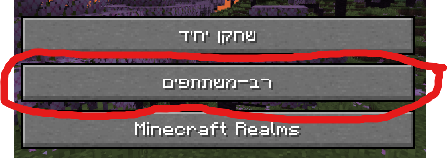
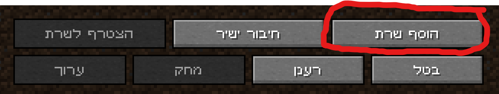

בנה את כדור הארץ ישראל
איך מצטרפים:
שלב 1: הורד את minecraft 1.20 ולחץ לשחק. לחץ על זה אם אתה צריך לדעת כיצד להתקין גרסאות ישנות יותר: כיצד להתקין minecraft 1.20

שלב 2: לחץ על מרובה משתתפים ואז לחץ הוסף שרת אם עדיין לא הוספת את שלנו.
 שלב 3: הוסף את השרת שלנו על ידי הקלדת ה- IP הבא:
שלב 4: הצטרף לשרת על ידי לחיצה על הצטרף לשרת כפתור כפי שמוצג להלן, או לחץ על החץ האפור בסמל השרת.